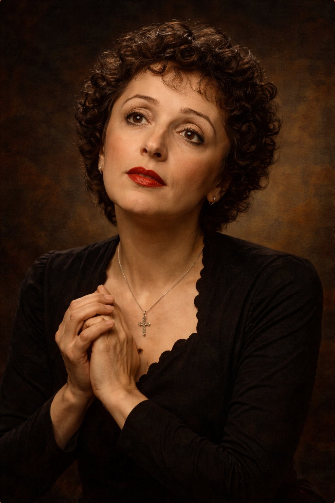

Chanteuse • Icône de la chanson française
Édith Piaf est née en 1915 à Paris. Son enfance est marquée par la pauvreté et par de nombreuses difficultés familiales. Elle grandit dans un environnement instable et connaît très tôt les épreuves de la vie. Malgré ces conditions difficiles, la musique devient progressivement une force essentielle dans son existence.
Dans sa jeunesse, Édith Piaf commence à chanter dans les rues de Paris. Sa voix attire rapidement l’attention, car elle est à la fois puissante, émotive et profondément sincère. Un producteur découvre son talent et l’aide à entrer dans le monde du spectacle. Son nom artistique, « Piaf », qui signifie « moineau » dans l’argot parisien, correspond bien à sa petite silhouette et à son énergie remarquable.
Édith Piaf chante des thèmes universels comme l’amour, la douleur, la perte et l’espoir. Ses interprétations touchent profondément le public. Parmi ses chansons les plus célèbres figurent La Vie en rose, Non, je ne regrette rien et Hymne à l’amour. Ces œuvres deviennent des symboles de la chanson française.
Au cours de sa carrière, Édith Piaf devient l’une des voix les plus célèbres de la musique française. Malgré les difficultés personnelles et les tragédies qu’elle traverse, elle continue à chanter avec une intensité et une sincérité qui impressionnent le public. Son style unique et sa présence sur scène marquent profondément l’histoire de la musique.
Aujourd’hui encore, les chansons d’Édith Piaf sont connues et écoutées dans le monde entier. Elle représente une part importante de l’âme musicale de Paris et de la France. Son héritage artistique continue d’influencer de nombreux chanteurs et artistes de différentes générations.